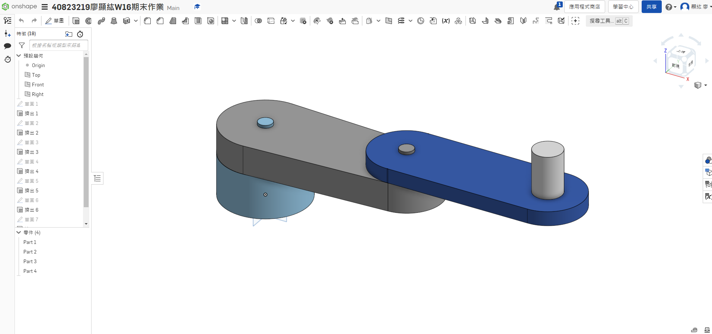

W15 <<
Previous W16
1.Onshape零組件繪製
連結:
https://cad.onshape.com/documents/c49aace71aea1a418e307166/w/b445d5c2a869d21129241371/e/cc2815fe83bc65ce54266531
圖檔下載:MTB ROBOT

2.創建CoppeliaSim 4.1.0 MTB機器人場景
function sysCall_init()
joint1=sim.getObjectHandle('joint1')
joint2=sim.getObjectHandle('joint2')
joint3=sim.getObjectHandle('joint3')
jointz=sim.getObjectHandle('jointz')
sim.setJointTargetPosition(joint1,0)
sim.setJointTargetPosition(joint2,0)
sim.setJointTargetPosition(joint3,0)
sim.setJointTargetPosition(jointz,0)
deg1=0
deg2=0
deg3=0
end
function sysCall_actuation()
message,auxiliaryData=sim.getSimulatorMessage()
while message~=-1 do
if (message==sim.message_keypress) then
if (auxiliaryData[1]==97) then
deg1=deg1+1
deg3=deg2-deg1
sim.setJointTargetPosition(joint1,deg1*math.pi/180)
end
if (auxiliaryData[1]==100) then
deg1=deg1-1
deg3=deg2-deg1
sim.setJointTargetPosition(joint1,deg1*math.pi/180)
end
if(auxiliaryData[1]==119) then
deg2=deg2+1
deg3=deg1-deg2
sim.setJointTargetPosition(joint2,deg2*math.pi/180)
end
if (auxiliaryData[1]==115) then
deg2=deg2-1
deg3=deg1-deg2
sim.setJointTargetPosition(joint2,deg2*math.pi/180)
end
if(auxiliaryData[1]==2008) then
sim.setJointTargetPosition(jointz,-0.073)
sim.setIntegerSignal("pad_switch",1)
end
if(auxiliaryData[1]==2007) then
sim.setJointTargetPosition(jointz,0)
end
if(auxiliaryData[1]==32) then
sim.setIntegerSignal("pad_switch",0)
end
sim.setJointTargetPosition(joint3,(deg2-deg1)*math.pi/180)
end
message,auxiliaryData=sim.getSimulatorMessage()
end
end
A鍵為joint1左轉、D鍵為joint2右轉
W鍵為joint1左轉、S鍵為join2右轉
下鍵為吸盤往下、上鍵為吸盤往上、空白鍵為吸盤放開
3.手臂末端加入suction pad吸盤
4.逆向運算學函示
function moving(x,y)
a=0.6
b=0.5
c=math.pow((math.pow(x,2)+math.pow(y,2)),0.5)
s=(a+b+c)/2
area=math.pow((s*(s-a)*(s-b)*(s-c)),0.5)
h=area/(2*c)
deg1_base=math.atan(x/y)
if x<0 and y<0 then
deg1_base=deg1_base+math.pi
end
deg1_tri=math.asin(h/a)
deg1=deg1_base+deg1_tri
deg2=math.pi-(0.5*math.pi-deg1_tri)-math.acos(h/b)
deg3=deg2-deg1
sim.setJointTargetPosition(joint01,deg1)
sim.setJointTargetPosition(joint02,-deg2)
sim.setJointTargetPosition(joint03,deg3)
end
function sysCall_threadmain()
joint01=sim.getObjectHandle('joint1')
joint02=sim.getObjectHandle('joint2')
joint03=sim.getObjectHandle('joint3')
jointz=sim.getObjectHandle('jointz')
sim.setJointTargetPosition(joint01,0)
sim.setJointTargetPosition(joint02,0)
sim.setJointTargetPosition(joint03,0)
sim.setJointTargetPosition(jointz,0)
sim.wait(5)
sim.setIntegerSignal("pad_switch",1)
sim.wait(5)
sim.setJointTargetPosition(jointz,-0.073)
sim.wait(5)
while sim.getSimulationState()~=sim.simulation_advancing_abouttostopre do
sim.setJointTargetPosition(jointz,0)
moving(0.2,0.7)
sim.wait(5)
sim.setIntegerSignal("pad_switch",0)
sim.wait(5)
sim.setIntegerSignal("pad_switch",1)
sim.wait(5)
sim.setJointTargetPosition(jointz,-0.078)
sim.wait(5)
sim.setJointTargetPosition(jointz,0)
sim.wait(5)
moving(-0.3,-0.55)
sim.wait(5)
sim.setIntegerSignal("pad_switch",0)
sim.wait(5)
sim.setIntegerSignal("pad_switch",1)
sim.wait(5)
sim.setJointTargetPosition(jointz,-0.083)
sim.wait(5)
sim.setJointTargetPosition(jointz,0)
sim.wait(5)
end
end
5.Python remote API逆向運算學函示
import sim as vrep
import math
import random
import time
import math
def moving(x,y):
a=0.6
b=0.5
c=math.pow((math.pow(x,2)+math.pow(y,2)),0.5)
s=(a+b+c)/2
area=math.pow((s*(s-a)*(s-b)*(s-c)),0.5)
h=area/(2*c)
deg1_base=math.atan(x/y)
if x<0 and y<0:
deg1_base=deg1_base+math.pi
deg1_tri=math.asin(h/a)
deg1=deg1_base+deg1_tri
deg2=math.pi-(0.5*math.pi-deg1_tri)-math.acos(h/b)
deg3=deg2-deg1
vrep.simxSetJointTargetPosition(clientID,joint01,deg1,opmode)
vrep.simxSetJointTargetPosition(clientID,joint02,-deg2,opmode)
vrep.simxSetJointTargetPosition(clientID,joint03,deg3,opmode)
print ('Start')
vrep.simxFinish(-1)
clientID = vrep.simxStart('127.0.0.1', 19997, True, True, 5000, 5)
if clientID != -1:
print ('Connected to remote API server')
res = vrep.simxAddStatusbarMessage(
clientID, "40823219",
vrep.simx_opmode_oneshot)
if res not in (vrep.simx_return_ok, vrep.simx_return_novalue_flag):
print("Could not add a message to the status bar.")
opmode = vrep.simx_opmode_oneshot_wait
STREAMING = vrep.simx_opmode_streaming
vrep.simxStartSimulation(clientID, opmode)
ret,joint01=vrep.simxGetObjectHandle(clientID,"joint1",opmode)
ret,joint02=vrep.simxGetObjectHandle(clientID,"joint2",opmode)
ret,joint03=vrep.simxGetObjectHandle(clientID,"joint3",opmode)
ret,jointz=vrep.simxGetObjectHandle(clientID,"jointz",opmode)
vrep.simxSetJointTargetPosition(clientID,joint01,0,opmode)
vrep.simxSetJointTargetPosition(clientID,joint02,0,opmode)
vrep.simxSetJointTargetPosition(clientID,joint03,0,opmode)
vrep.simxSetIntegerSignal(clientID,"pad_switch",1,opmode)
vrep.simxSetJointTargetPosition(clientID,jointz,-0.073,opmode)
time.sleep(1)
vrep.simxSetJointTargetPosition(clientID,jointz,0,opmode)
while True:
moving(0.2,0.7)
time.sleep(1)
vrep.simxSetIntegerSignal(clientID,"pad_switch",0,opmode)
time.sleep(1)
vrep.simxSetIntegerSignal(clientID,"pad_switch",1,opmode)
vrep.simxSetJointTargetPosition(clientID,jointz,-0.078,opmode)
time.sleep(1)
vrep.simxSetJointTargetPosition(clientID,jointz,0,opmode)
moving(-0.3,-0.55)
time.sleep(1)
vrep.simxSetIntegerSignal(clientID,"pad_switch",0,opmode)
time.sleep(1)
vrep.simxSetIntegerSignal(clientID,"pad_switch",1,opmode)
vrep.simxSetJointTargetPosition(clientID,jointz,-0.083,opmode)
time.sleep(1)
vrep.simxSetJointTargetPosition(clientID,jointz,0,opmode)
time.sleep(1)
心得:這一次作業的能夠順利完成，要非常感謝我們班的40823214林厚宇，在閒暇之時花了五六個小時重頭到尾教我們一遍，讓我能順利趕上進度。
W15 <<
Previous